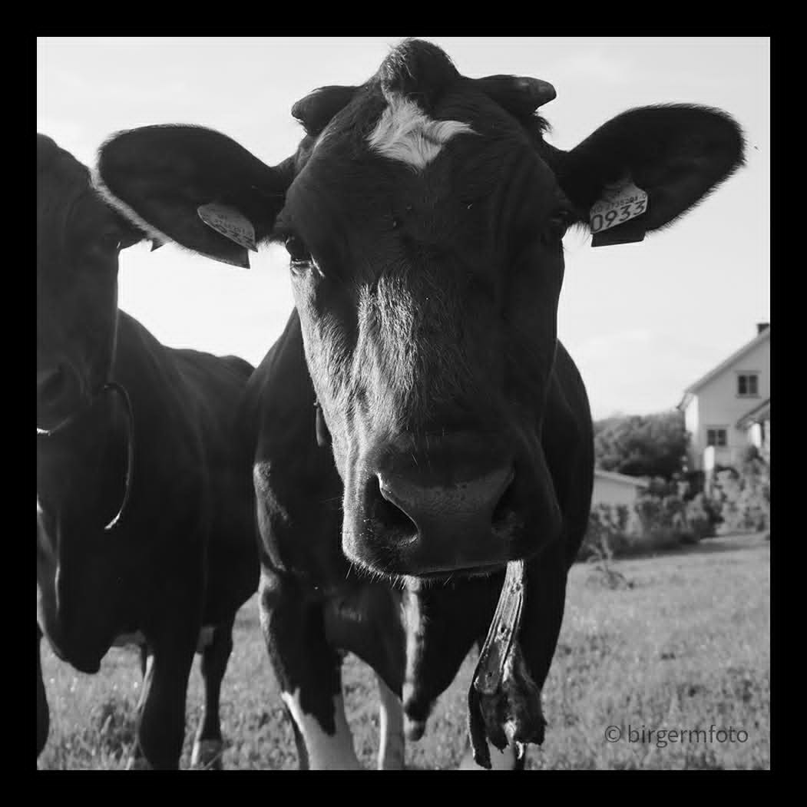

Bak kameraet
Om
Jeg er frilansfotograf med hovedvekt på sportsfotografering. Jeg liker å fange bevegelse, intensitet og de små øyeblikkene som forteller historien rundt det som skjer.
Kameraet blir også med ut i naturen og nærmiljøet. Denne nettsiden er et utvalg av arbeidene mine, og flere bilder kommer etter hvert.